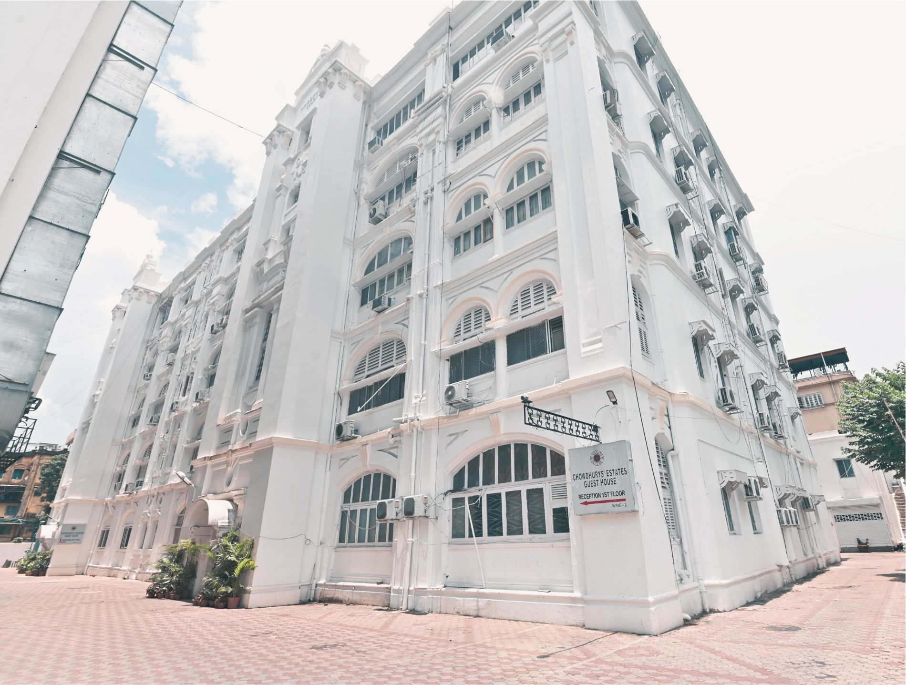
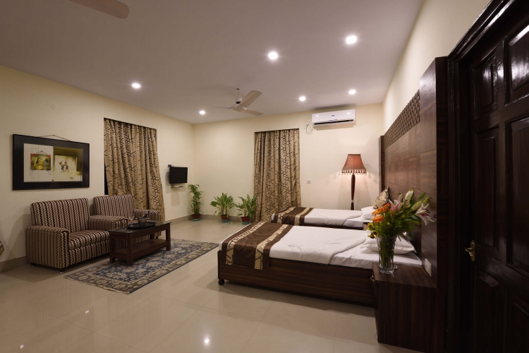
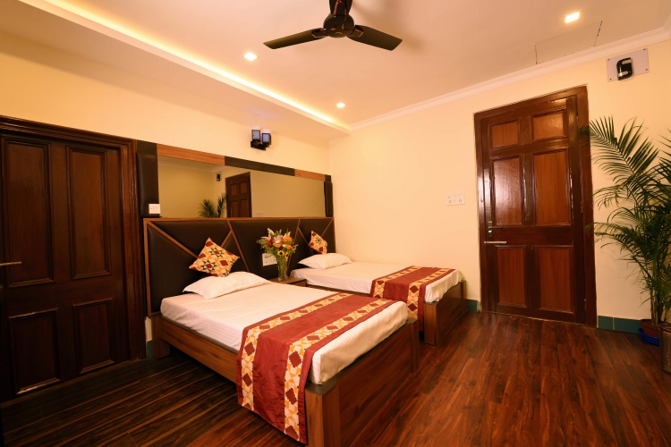

At the heart
of Kolkata
A heritage building, 78 guest rooms and a central address shaped for family stays, business travel and important occasions.

A grand legacy
Thirty years of hospitality
Chowdhurys’ Estate Guest House brings together the scale and architectural character of a heritage property with contemporary room comforts. Its Chowringhee address keeps guests close to Kolkata’s cultural and commercial centre.
- 78 air-conditioned guest rooms
- Four published room and suite categories
- Spaces for conferences, banquets and weddings
The address
Close to the city’s landmarks
The guest house is near Maidan, Victoria Memorial, St. Paul’s Cathedral, Park Street, shopping centres, clubs and central business areas. Rabindra Sadan Metro and Exide Crossing make it easy to identify and reach.
A one-stop destination
With rooms, an in-house restaurant, banquet halls and conference facilities, the property serves wedding functions, social occasions, corporate conferences and board meetings as well as regular stays.
Explore facilitiesAuthentic by design
The property as it really is
Every photograph on this concept site comes from the guest house’s existing published gallery. No stock hotel or swimming-pool imagery is used.

